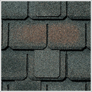

/ Каталог
/ КаталогБитумная черепица
Еще вчера крыши большинства современных коттеджей сверкали на солнце волнистыми листами металлочерепицы, не оставляя шансов другим материалам конкурировать с дорогим и модным покрытием. Сегодня все чаще можно увидеть элегантные скаты с плавно переходящими одна в другую плоскостями. Оригинальные, но не вызывающие - они придают неповторимый и изысканный стиль каждому дому. Все это мягкая битумная черепица или гонты - один из самых популярных кровельных материалов современной Европы.
Функциональные достоинства гонтовой кровли трудно переоценить - это. Прежде всего долговечность, неприхотливость в обслуживании, отсутствие шума во время дождя, устойчивость к ветровой нагрузке. Мягкая черепица образует сплошной ковер, что само по себе является гарантией гидроизоляции. Затраты на обустройство гонтовой кровли относительно невелики и легко прогнозируемы. Невысокий удельный вес материала позволяет использовать облегченные стропильные конструкции.
Битумная черепица практически безотходна и годится как для простых поверхностей, так и для кровель, содержащих сложнейшие архитектурные элементы. Разнообразие форм, цветов, и оттенков позволяет достичь единственного в своем роде эффекта для каждой постройки.
|  | ||
| CAMELOT (камелот) подробнее |
CAMELOT (камелот) подробнее |
CAMELOT (камелот) подробнее |
| CAMELOT (камелот) подробнее |
CAMELOT (камелот) подробнее |
CAMELOT (камелот) подробнее |